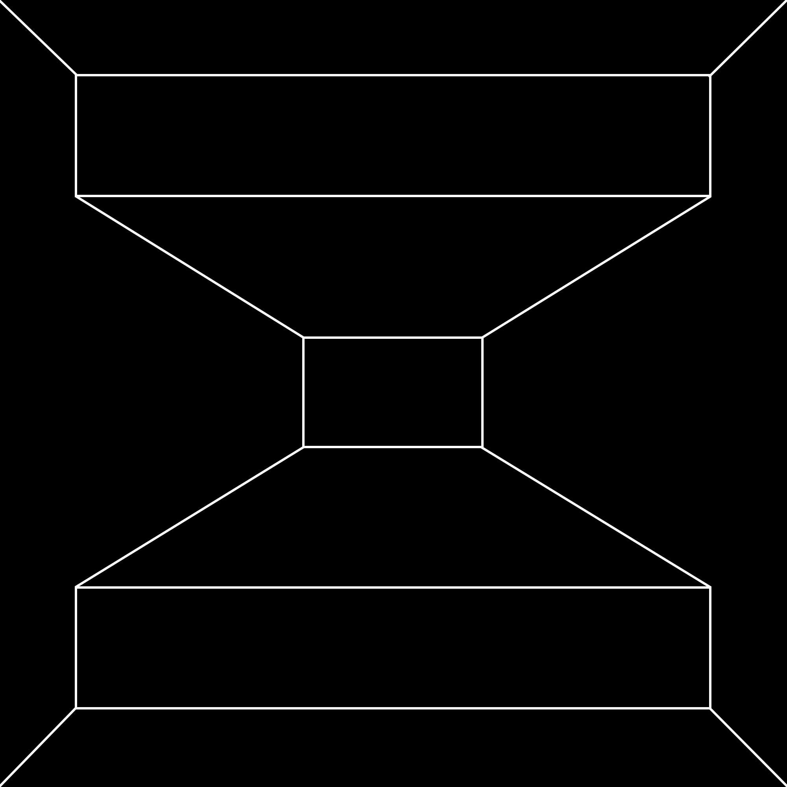

Bachelard’s sentence simply says this: origins (beginnings) have consequences (endings).
The poem is the consequence of its origins. Give me the fruit and I will take from it a see and plant it and watch grow the tree from which it fell.